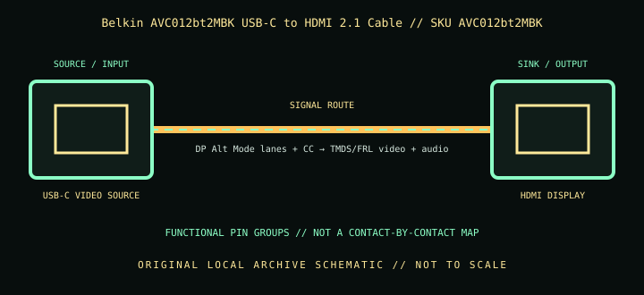

[ INDIVIDUAL COMPONENT // CABLES & ADAPTERS ]
Belkin AVC012bt2MBK USB-C to HDMI 2.1 Cable
A 2 m one-way USB-C-to-HDMI cable for USB-C sources that actually output DisplayPort video over Alt Mode; its HDMI 2.1 label does not guarantee every 8K/4K mode on every host.

IDENTIFICATION: Catalog SKU: AVC012bt2MBK. Record the complete label, regional suffix, hardware model/revision, and cable length printed on the specimen; nearby model variants are not interchangeable by assumption.
Specifications & connector revisions
| Catalog subcategory | Display cables and adapters |
|---|---|
| Manufacturer / SKU | Belkin AVC012bt2MBK USB-C to HDMI 2.1 Cable — AVC012bt2MBK |
| Connector ends / length | USB-C male source → HDMI Type-A male display; fixed 2 m (6.6 ft) cable. |
| Protocol and revision | Belkin identifies this as a USB-C to HDMI 2.1 cable. The product advertises up to 8K at 60 Hz or 4K at 144 Hz and up to 48 Gb/s HDMI link capacity. Those maxima require compatible source GPU/USB-C DisplayPort Alt Mode, DSC where needed, HDMI display, cable path, and selected timing; they are not guaranteed by the USB-C connector or SKU alone. |
| Signal path / pinout | USB-C source uses the host’s DisplayPort Alt Mode lane allocation and control/identity pins; the HDMI Type-A end carries HDMI video, audio, clock/control, and shield/return paths. This is an active protocol path, not a passive USB-C pin-for-pin HDMI wire. No proprietary internal pin map is asserted. |
| Mode and bandwidth caveats | At 2 m, signal margin depends on the exact implementation and endpoint mode. Avoid tight bends and adapters/extensions; if a high-rate mode is unstable, reduce refresh/resolution or test a shorter certified cable. The product’s HDMI version is not a blanket compatibility promise for every HDMI feature. |
Compatibility & direction
Unidirectional from a USB-C host with video output to an HDMI display. USB-C charging/data-only ports and HDMI-source-to-USB-C-monitor use are not supported. Check host support for the target resolution/refresh and DSC, monitor HDMI input mode, HDR/VRR support, and HDCP requirements; the advertised peak mode may need reduced chroma or refresh on some devices.
Handling & archival notes
Keep the stated source and sink ends in their specified direction; do not force keyed connectors or use this product as an assumed voltage/pinout substitute for a superficially similar cable. Support the tether during connection, keep contacts clean and dry, and avoid tight bends at molded strain reliefs.
For the archive, photograph both connector faces, labels, packaging SKU, length, and revision. If a mode is tested, record source model/GPU and firmware, sink model/firmware, intermediate adapters, cable run, resolution, refresh rate, chroma/HDR, and whether HDCP succeeds. Test results apply to that exact chain, not all variants.
Manufacturer and standards sources
- Belkin — Connect USB-C to HDMI 2.1 Cable, AVC012bt2MBKManufacturer product description, model, length, and supported modes.
- Belkin — AVC012bt2MBK product supportManufacturer support locator for the exact product SKU.
Maximum modes are source-, sink-, firmware-, signal-path-, and revision-dependent. Manufacturer documentation for the exact SKU and hardware model takes precedence over family names and connector appearance.